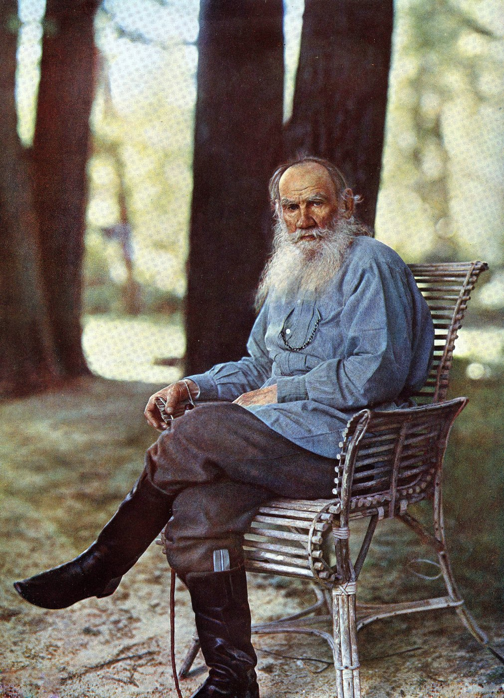

导论 战争的组织、选择与后果
从战争目标进入战场
1904年，日本向俄国开战时，俄国援军还在远东集结。日本须赶在对手充分展开以前抢得先机，俄国则要保住舰队基地和交通线，等候后续部队。战局取决于一些朴素而艰难的事：士兵何时到达，炮弹能否送上阵地，消息传到指挥所时还来不来得及。统帅的抱负，要从这些具体条件中寻找出路。 〔1〕

一年半以后，战争走到谈判桌前。1905年9月5日的朴次茅斯和约，把撤军、租借权、铁路和南萨哈林分别写成条款。日本已经获胜，还须估量再战的代价；俄国遭到重创，仍有力量支撑最后的讨价还价。此后两国又通过协约协调权益，直到俄国革命和内战改变了交涉的政治基础。战场如何留下这样的和平，是这部历史首先提出的问题。 〔2〕
1941年，日苏两国选择缔结中立条约。双方仍在戒备，也都愿意取得一段可以利用的时间。德国入侵苏联后，莫斯科力求避免两线作战；东京则在对华战争、北方机会与南方需求之间安排力量。情报、部署和预案伴随着外交承诺，维持中立同样需要经营。到1945年，欧洲战局与同盟安排改变，苏联又开始选择参战的时机。 〔3〕
本书沿战争背景、战争组织、战略战术、领导决策、代价成本、战俘事件与国际关系七项主线展开。它们在历史中交织：渡河要有工兵和火力，撤退考验情报与指挥，和谈牵动财政、盟国与国内政治。循着这些行动，既能看见国家怎样用兵，也能追问领袖为胜负作出了什么选择。
战争怎样获得持续的力量
旅顺集中了舰队、要塞和铁路终点。海上封锁、陆上围攻与南满野战同时争用兵力和运输，一处战场的进展，会改变另一处的轻重。围城军向奉天开进，还得重编部队、转运器材、准备沿途兵站。地图上的箭头可以一笔画完，军队须一步步走到目的地。 〔4〕
四十年后，苏军从欧洲战争中转来军队与经验，在远东发动多方向进攻；关东军则在抽调、新编和移防中迎来战争。大兴安岭、铁路枢纽和沿海港口，又一次关系到军队能走多远。两场战争相隔四十年，同一片地域上的力量却已大不相同。 〔5〕
中央定下目标，前线面对的却是每天变化的敌情、补给和伤亡。坏消息能否上达，援军往哪里去，何时继续进攻、何时承认原计划已走到尽头，都要有人作出决定。对统帅的评价，也应从这些地方落笔。
从国家成本走向人的处境
1904年，托尔斯泰在《醒悟吧！》中写道：“又是战争。又是无人需要、全无必要的苦难。”他从基督教反战立场追问那些鼓动别人赴死的人，把俄国和日本普通人的生命放在一起衡量。战争正在进行，对代价的追问也已开始。这声音把国家争夺的土地和声望，同付出生命的人联系起来。〔6〕
国家用账目记录军费与借款，用舰船和运输量估计续战能力。人的身体保存着另一份战争记录：伤病、劳役、失去的健康，以及多年分离之后重新生活的困难。数字使人看见规模，个人经历使人看见代价落在谁身上。
中国东北、朝鲜和蒙古是这些战争发生的地方，也是人们原有的家园。当地政权、军队和居民卷入运输、征用、抵抗、撤离与受降，承受列强争夺土地和交通的后果。日俄两国声称的安全与利益，在这里改变了别人的主权和生活。全书将始终把这些地区放在视野之内。 〔7〕
日俄战争期间，松山的部分俄国军官第一次获准外出，临到归营还舍不得放过最后几分钟。1945年后的日本被抑留者，则在远方工地等候归国。外出许可、派工和离营决定，掌握在管理机关手中；一纸遣返协定还要经过港口、船舶和人员交接，才能把人送回家。沿着这些经历，战争反思便有了具体的起点。 〔8〕
从战后安排讨论和平条件
战争也有漫长的收尾。1945年，日本宣布投降，各地部队陆续停火、缴械，被接收人员的归期却还遥远。1956年日苏共同宣言终止战争状态、恢复关系，人员与领土问题分别进入新的安排。停战、归国和国家关系的恢复，有着各自的日程。 〔9〕
此后的和平还要经受日常事务的检验。发生海空事件时，消息能否传到对方；亲属寻找失踪者时，档案能否打开；局势转坏以后，已经达成的安排还能维持多少。对未来的思考，将从这些历史经验出发。
俄国先后经历帝国、苏俄与苏联、俄罗斯联邦的制度变迁；日本的体制、军队和社会也不断变化。每一代人的决定，都有其所处的局势与能够使用的办法。书中的褒贬将据此展开，疑问也由此提出；关键依据与未决之处，留在章后注释和参考附录中。
战争以国家的名义开始，却在个人的时间里结束。四十年后，另一批人将从相反的方向经过同一片土地；他们的归途，与 1904 年松山营门前的那些下午并非无关。